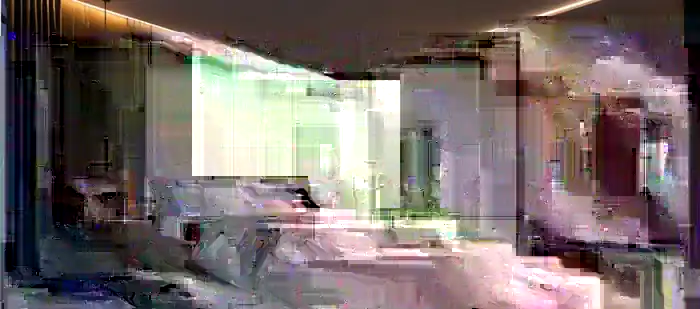

Индивидуальные потолки
Формы, фактуры и цвета под ваш проект.
Собственное производство, монтаж под ключ и полотна по индивидуальным размерам. Подбираем потолок, свет и конструкцию под интерьер — без шаблонных решений.

Матовые, глянцевые, сатиновые, фактурные и тканевые полотна, фотопечать, теневые и парящие решения, световые линии, треки и скрытые карнизы.
Формы, фактуры и цвета под ваш проект.

Линии, треки, ниши и контурная подсветка.

От замера до чистого результата.
Полотна и комплектующие по России.
Для тестового макета используются премиальные визуализации. На финальном сайте заменим их реальными объектами ANTERO.
КАЧЕСТВО◆Собственное производствоБез лишних посредников, контроль качества и сроков.
✦Опытные монтажникиПрофессиональный инструмент, чистый и аккуратный монтаж.
✓Гарантия и договор10 лет на полотна и комплектующие, 1 год на монтаж.
⌖Новосибирск и областьВыезд до 150 км и отправка полотен по России.
Отдельное B2B-направление для монтажников, строителей и постоянных партнёров.
При большей ширине возможно решение со сварным швом. Стандартное изготовление — ориентировочно около 12 дней, срочность обсуждается отдельно.
Цена зависит от профиля, света, карнизов и сложности. Точная смета — после замера.
Базовый ориентир от 480 ₽/м².
Карточки ниже — примеры для дизайна. Перед финальным запуском заменим их реальными отзывами.
«Очень понравилось, как подобрали свет и профиль. Монтаж аккуратный, после работ всё чисто.»
Анна · пример отзыва«Заказывали потолки на всю квартиру. По срокам уложились, стоимость после замера не изменилась.»
Максим · пример отзыва«Берём полотна для монтажа. Удобно отправлять размеры, всё приезжает готовое к работе.»
Игорь · пример отзываНе нашли ответ? В preview доступны демонстрационные WhatsApp и Telegram.
Матовые, глянцевые, сатиновые, фактурные и тканевые. Есть фотопечать.
Да. Для монтажников есть отдельное направление с комплектующими и доставкой.
По Новосибирску — да. По области условия выезда уточняются при заявке.
Небольшой объект часто выполняется за один день. Сложные проекты — по согласованному графику.
10 лет на полотна и комплектующие, 1 год на монтаж. Работа по договору.
65% после договора и 35% после монтажа и приёмки. Возможны рассрочка и кредит.
Демо-контакты поставлены специально для согласования концепта.